CRVI000984Unknown - Jadwiga
Trademark · owner not established · designer unknown
Trademark · owner not established · designer unknown

CRVI000989Honey Packers, Inc. - honey
Trademark · Honey · New York, New York · designer unknown · 1936
Trademark · Honey · New York, New York · designer unknown · 1936

CRVI000937Unknown - Nuki
Trademark · owner not established · designer unknown
Trademark · owner not established · designer unknown

CRVI000974Unknown - new gold
Trademark · owner not established · designer unknown
Trademark · owner not established · designer unknown

CRVI001003Cleveland Institute of Radio Electronics - C i
Trademark · Pamphlets, Books, and Other Publications · Cleveland, Ohio · designer unknown · 1956
Trademark · Pamphlets, Books, and Other Publications · Cleveland, Ohio · designer unknown · 1956

CRVI000970Unknown - Laff
Trademark · owner not established · designer unknown
Trademark · owner not established · designer unknown

CRVI000983Unknown - New Pride
Trademark · owner not established · designer unknown
Trademark · owner not established · designer unknown

CRVI000933Unknown - AD
Trademark · owner not established · designer unknown
Trademark · owner not established · designer unknown

CRVI000981Unknown - Dewis
Trademark · owner not established · designer unknown
Trademark · owner not established · designer unknown

CRVI000916Unknown - An angular E or F crossed by an arrow
Trademark · owner not established · designer unknown
Trademark · owner not established · designer unknown

CRVI000921Dow Corning Corporation - DOW CORNING
Trademark · Organopolysiloxane Fluids for Use as Polishes and Polish Ingredients · Midland, Michigan · designer unknown · 1957
Trademark · Organopolysiloxane Fluids for Use as Polishes and Polish Ingredients · Midland, Michigan · designer unknown · 1957

CRVI000976Unknown - FRAT HOUSE
Trademark · owner not established · designer unknown
Trademark · owner not established · designer unknown

CRVI001004Unknown - An orbital cage folded from ribbons
Trademark · owner not established · designer unknown
Trademark · owner not established · designer unknown

CRVI000893Unknown - NO-MO
Trademark · owner not established · designer unknown
Trademark · owner not established · designer unknown

CRVI000894Unknown - A figure whose head and body are a television set
Trademark · owner not established · designer unknown
Trademark · owner not established · designer unknown

CRVI000938Unknown - NEON
Trademark · owner not established · designer unknown
Trademark · owner not established · designer unknown

CRVI000940H.F. Stimm, Inc. - S
Trademark · Construction and Repair of Buildings and Bridges · Buffalo, New York · designer unknown · 1956
Trademark · Construction and Repair of Buildings and Bridges · Buffalo, New York · designer unknown · 1956

CRVI000973Unknown - PARK LANE
Trademark · owner not established · designer unknown
Trademark · owner not established · designer unknown

CRVI000892Unknown - A punched card drawn as a figure with spectacles and a pipe
Trademark · owner not established · designer unknown
Trademark · owner not established · designer unknown

CRVI000954Coopers, Inc. - Four figures in undergarments beneath a waistband marked OPENING; the only caption on the page
Trademark · Men's Undergarments · Kenosha, Wisconsin · designer unknown · 1938
Trademark · Men's Undergarments · Kenosha, Wisconsin · designer unknown · 1938

CRVI000966Unknown - METAPAD
Trademark · owner not established · designer unknown
Trademark · owner not established · designer unknown

CRVI000900Unknown - X1
Trademark · owner not established · designer unknown
Trademark · owner not established · designer unknown

CRVI000971Unknown - Two heavy 3-D letters
Trademark · owner not established · designer unknown
Trademark · owner not established · designer unknown

CRVI000890Unknown - Figure on a unicycle carrying a box
Trademark · owner not established · designer unknown
Trademark · owner not established · designer unknown

CRVI000950Unknown - SUSIE Q
Trademark · owner not established · designer unknown
Trademark · owner not established · designer unknown

CRVI000943Homasote Company - BIG SHEETS
Trademark · Wall Board and Fibrous Material · Trenton, New Jersey · designer unknown · 1955
Trademark · Wall Board and Fibrous Material · Trenton, New Jersey · designer unknown · 1955

CRVI000992John Sunshine Chemical Co., Inc. - CANNIBAL — EATS EVERYTHING IN THE PIPE
Trademark · Drainpipe Cleaner · Chicago, Illinois · designer unknown · 1938
Trademark · Drainpipe Cleaner · Chicago, Illinois · designer unknown · 1938

CRVI001001Community Church of Religious Science - Your world is Your reflection of Your understanding
Trademark · Religious Educational Books · Los Angeles, California · designer unknown · 1974
Trademark · Religious Educational Books · Los Angeles, California · designer unknown · 1974

CRVI001006Wilson & Company, Inc. - W
Trademark · Fresh, Cooked, Smoked, Cured and Frozen Meats · Chicago, Illinois · designer unknown · 1957
Trademark · Fresh, Cooked, Smoked, Cured and Frozen Meats · Chicago, Illinois · designer unknown · 1957

CRVI000913Unknown - 1 / 10
Trademark · owner not established · designer unknown
Trademark · owner not established · designer unknown

CRVI000915Unknown - Marlou
Trademark · owner not established · designer unknown
Trademark · owner not established · designer unknown

CRVI000934Miljam Plastic Instrument Manufacturing Company, Inc. - Injex
Trademark · Plastic instruments · designer unknown · 1952
Trademark · Plastic instruments · designer unknown · 1952

CRVI000911Bell Aircraft Corporation - BELL Aircraft
Trademark · Wheatfield, New York · designer unknown · 1946
Trademark · Wheatfield, New York · designer unknown · 1946

CRVI000997Five Minute Home Cleaner Co. - A figure holding a clock aloft — the five minutes of the company's name
Trademark · Dry Cleaner · Chicago, Illinois · designer unknown · 1930
Trademark · Dry Cleaner · Chicago, Illinois · designer unknown · 1930

CRVI000948Unknown - SKE-DADDLE
Trademark · owner not established · designer unknown
Trademark · owner not established · designer unknown

CRVI000926Ernest H. Vanderwall Company - EVCO
Trademark · Lathe Center · San Francisco, California · designer unknown · 1947
Trademark · Lathe Center · San Francisco, California · designer unknown · 1947

CRVI000951Unknown - THE JITTERBUG
Trademark · owner not established · designer unknown
Trademark · owner not established · designer unknown

CRVI000968Unknown - A fan of blades rising from a ringed monogram
Trademark · owner not established · designer unknown
Trademark · owner not established · designer unknown

CRVI001014Delcon Corp. - d
Trademark · Electrical Measuring Devices · Palo Alto, California · designer unknown · 1963
Trademark · Electrical Measuring Devices · Palo Alto, California · designer unknown · 1963

CRVI000924Bowlerama, Inc. - BOWLERAMA
Trademark · Promoting the Business of Bowling Alley Operations · Minneapolis, Minnesota · designer unknown · 1954
Trademark · Promoting the Business of Bowling Alley Operations · Minneapolis, Minnesota · designer unknown · 1954

CRVI000901Micro-Master, Inc. - An atom whose nucleus is a head
Trademark · Photograph Developing · Kansas City, Missouri · designer unknown · 1957
Trademark · Photograph Developing · Kansas City, Missouri · designer unknown · 1957

CRVI000986Southern Oak Flooring Industries - SOFI
Trademark · Flooring: Tongued and Grooved, End-Matched, Square Edge Strips, Parquetry and Fabricated Blocks · Little Rock, Arkansas · designer unknown · 1931
Trademark · Flooring: Tongued and Grooved, End-Matched, Square Edge Strips, Parquetry and Fabricated Blocks · Little Rock, Arkansas · designer unknown · 1931

CRVI001008Motown Records Corp. - The Supremes
Trademark · Entertainment Services · Detroit, Michigan · designer unknown · 1974
Trademark · Entertainment Services · Detroit, Michigan · designer unknown · 1974

CRVI000909Prestile Manufacturing Company - PRESTILE
Trademark · Synthetic Adhesive Cements in Liquid or Solid Form · Chicago, Illinois · designer unknown · 1947
Trademark · Synthetic Adhesive Cements in Liquid or Solid Form · Chicago, Illinois · designer unknown · 1947

CRVI000935Unknown - N o
Trademark · owner not established · designer unknown
Trademark · owner not established · designer unknown

CRVI000964Unknown - EZ ON THE (eyes)
Trademark · owner not established · designer unknown
Trademark · owner not established · designer unknown

CRVI000965Atlas Tack Corp. - ATLAS
Trademark · Nails and Tacks · Fairhaven, Massachusetts · designer unknown · 1936
Trademark · Nails and Tacks · Fairhaven, Massachusetts · designer unknown · 1936

CRVI000903Pacific Gas Corporation - PACIFIC GAS
Trademark · Butane and Propane Gases · New York, New York · designer unknown · 1948
Trademark · Butane and Propane Gases · New York, New York · designer unknown · 1948

CRVI000972Unknown - PRO-TEX
Trademark · owner not established · designer unknown
Trademark · owner not established · designer unknown

CRVI000944Unknown - SILVERTONE
Trademark · owner not established · designer unknown
Trademark · owner not established · designer unknown

CRVI000952The Guild Shirt Co. - GUILDHALL
Trademark · Outer Shirts and Pajamas of Textile Fabrics · Hazleton, Pennsylvania · designer unknown · 1936
Trademark · Outer Shirts and Pajamas of Textile Fabrics · Hazleton, Pennsylvania · designer unknown · 1936

CRVI000985Unknown - Glit
Trademark · owner not established · designer unknown
Trademark · owner not established · designer unknown

CRVI000917Unknown - KEMKOR
Trademark · owner not established · designer unknown
Trademark · owner not established · designer unknown

CRVI000939Dallas Iron & Wire Works, Inc. - Add-A-Play
Trademark · Swings, Gliders, Gyms, Exercise Frames and Parts Thereof · Dallas, Texas · designer unknown · 1953
Trademark · Swings, Gliders, Gyms, Exercise Frames and Parts Thereof · Dallas, Texas · designer unknown · 1953

CRVI000922United Co-operatives, Inc. - UNICO Ac-cent
Trademark · Ready-Mixed Paints · Alliance, Ohio · designer unknown · 1954
Trademark · Ready-Mixed Paints · Alliance, Ohio · designer unknown · 1954

CRVI000955Glorasheen Products Co. - GLORASHEEN
Trademark · Hair Coloring Preparation · Los Angeles, California · designer unknown · 1934
Trademark · Hair Coloring Preparation · Los Angeles, California · designer unknown · 1934

CRVI000884Minnesota Macaroni Company - Woman holding a package
Trademark · St. Paul, Minnesota · designer unknown · 1940
Trademark · St. Paul, Minnesota · designer unknown · 1940

CRVI000885Queen Knitting Mills - Silhouette of a woman in a strapless top with a measuring ribbon; the only garment caption on the page
Trademark · Strapless Halters and Women's Outerwear · Philadelphia, Pennsylvania · designer unknown · 1949
Trademark · Strapless Halters and Women's Outerwear · Philadelphia, Pennsylvania · designer unknown · 1949

CRVI000925Colgate-Palmolive-Peet Company - FAB
Trademark · Soaps for Laundry and Household Use · Jersey City, New Jersey · designer unknown · 1948
Trademark · Soaps for Laundry and Household Use · Jersey City, New Jersey · designer unknown · 1948

CRVI000969Popular Brands, Inc. - POP
Trademark · Detergent Preparation for Dish Washing · Pennsylvania · designer unknown · 1937
Trademark · Detergent Preparation for Dish Washing · Pennsylvania · designer unknown · 1937

CRVI000947Unknown - STANZAL
Trademark · owner not established · designer unknown
Trademark · owner not established · designer unknown

CRVI000959Artic Roofings, Inc. - A penguin drawn in shingle facets — the bird for the name and the drawing for the product
Trademark · Composition Shingles and Roll Roofing · Edge Moor · designer unknown · 1939
Trademark · Composition Shingles and Roll Roofing · Edge Moor · designer unknown · 1939

CRVI001009Fairway Foods, Inc. - Radiant Roast
Trademark · Coffee · St. Paul, Minnesota · designer unknown · 1957
Trademark · Coffee · St. Paul, Minnesota · designer unknown · 1957

CRVI000961Unknown - PHIL-UP
Trademark · owner not established · designer unknown
Trademark · owner not established · designer unknown

CRVI002815Unknown - Walter Dexel: Bilder, Aquarelle, Collagen, Leuchtreklame, Typografie
1979
1979

CRVI000891Unknown - Dressmaker figure — thimble head, scissors, needle and thread
Trademark · owner not established · designer unknown
Trademark · owner not established · designer unknown

CRVI000994Unknown - B H Co
Trademark · owner not established · designer unknown
Trademark · owner not established · designer unknown

CRVI000928Unknown - 400
Trademark · owner not established · designer unknown
Trademark · owner not established · designer unknown

CRVI000993Unknown - A stippled cloud of smoke driving forward
Trademark · owner not established · designer unknown
Trademark · owner not established · designer unknown

CRVI000962Unknown - A stippled form with a projecting blade
Trademark · owner not established · designer unknown
Trademark · owner not established · designer unknown

CRVI000988Unknown - PennCera
Trademark · owner not established · designer unknown
Trademark · owner not established · designer unknown

CRVI001005Unknown - A fist gripping a wave train and firing an arrow
Trademark · owner not established · designer unknown
Trademark · owner not established · designer unknown

CRVI000941The Craftsman Press, Inc. - YANKEE
Trademark · Business Forms · Seattle, Washington · designer unknown · 1949
Trademark · Business Forms · Seattle, Washington · designer unknown · 1949

CRVI000995Hayes Spray Gun Co. - A bug blown backwards by a spray; the only caption on the page
Trademark · Service Kit Comprising Replacement and Repair Parts for Garden Spray Guns · Pasadena, California · designer unknown · 1960
Trademark · Service Kit Comprising Replacement and Repair Parts for Garden Spray Guns · Pasadena, California · designer unknown · 1960

CRVI000936Unknown - BARACUTA
Trademark · owner not established · designer unknown
Trademark · owner not established · designer unknown

CRVI000914Vittoria Necchi Societa per Azioni - N
Trademark · Sewing Machines · Pavia, Italy · designer unknown · 1952
Trademark · Sewing Machines · Pavia, Italy · designer unknown · 1952

CRVI000960Milwaukee Grains & Feed Co. - $
Trademark · Horse and Dairy Feeds · Milwaukee, Wisconsin · designer unknown · 1928
Trademark · Horse and Dairy Feeds · Milwaukee, Wisconsin · designer unknown · 1928

CRVI000946Bark Dog Food Company - BARK
Trademark · Dog Meal · Midland, Michigan · designer unknown · 1950
Trademark · Dog Meal · Midland, Michigan · designer unknown · 1950

CRVI000949Nutrition Square, Inc. - NUTRITION SQUARE
Trademark · Pittsburgh, Pennsylvania · designer unknown · 1956
Trademark · Pittsburgh, Pennsylvania · designer unknown · 1956

CRVI002700Kohei Sugiura - SD Space Design No. 37
1967
1967

CRVI000898Unknown - K
Trademark · owner not established · designer unknown
Trademark · owner not established · designer unknown

CRVI000923Unknown - GINET
Trademark · owner not established · designer unknown
Trademark · owner not established · designer unknown

CRVI000980Unknown - KLIX
Trademark · owner not established · designer unknown
Trademark · owner not established · designer unknown

CRVI000908Capitol Records, Inc. - The Capitol dome in a starburst; the only caption on the page
Trademark · Grooved Phonograph Records · Los Angeles, California · designer unknown · 1949
Trademark · Grooved Phonograph Records · Los Angeles, California · designer unknown · 1949

CRVI000987General Mills, Inc. - Torpedo
Trademark · Electrical Flashlights · Minneapolis, Minnesota · designer unknown · 1938
Trademark · Electrical Flashlights · Minneapolis, Minnesota · designer unknown · 1938

CRVI000975Unknown - Get Happy!
Trademark · owner not established · designer unknown
Trademark · owner not established · designer unknown

CRVI000979The Waterbury Button Co. - WAZZOO
Trademark · Novelty Humming Musical Instruments · Waterbury, Connecticut · designer unknown · 1936
Trademark · Novelty Humming Musical Instruments · Waterbury, Connecticut · designer unknown · 1936

CRVI000886Ferno Manufacturing Company - ONE MAN
Trademark · Ambulance Cots and Morticians' Carts · Circleville, Ohio · designer unknown · 1957
Trademark · Ambulance Cots and Morticians' Carts · Circleville, Ohio · designer unknown · 1957

CRVI000991Esquire, Inc. - The bald, moustached, goggle-eyed head is Esky, Esquire's mascot
Trademark · Publication Issued Monthly and for a Column in a Newspaper Issued Weekly · Chicago, Illinois · designer unknown · 1935
Trademark · Publication Issued Monthly and for a Column in a Newspaper Issued Weekly · Chicago, Illinois · designer unknown · 1935

CRVI000902Manson Laboratories, Inc. - manson
Trademark · Devices to Measure Frequencies · Stamford, Connecticut · designer unknown · 1957
Trademark · Devices to Measure Frequencies · Stamford, Connecticut · designer unknown · 1957

CRVI000919Unknown - PACE
Trademark · owner not established · designer unknown
Trademark · owner not established · designer unknown

CRVI000907Robert Gair Company - GAIR
Trademark · Folding Paperboard Cartons and Corrugated Fibreboard Shipping Boxes · New York, New York · designer unknown · 1947
Trademark · Folding Paperboard Cartons and Corrugated Fibreboard Shipping Boxes · New York, New York · designer unknown · 1947

CRVI000958Nitrate Agencies Co. - GENUINE PERUVIAN GUANO
Trademark · Fertilizer · New York, New York · designer unknown · 1925
Trademark · Fertilizer · New York, New York · designer unknown · 1925

CRVI000897Braunstein Freres, Inc. - The bearded zouave smoking — the Zig-Zag figure, paired with the ZIG-ZAG wordmark on the facing frame
Trademark · Cigarette Paper · New York, New York · designer unknown · 1953
Trademark · Cigarette Paper · New York, New York · designer unknown · 1953

CRVI000977Unknown - ZEPHYR
Trademark · owner not established · designer unknown
Trademark · owner not established · designer unknown

CRVI000880Sleepwear, Inc. - RESTWELL
Trademark · Pajamas · New York, New York · designer unknown · 1947
Trademark · Pajamas · New York, New York · designer unknown · 1947

CRVI000895Unknown - Q-MAN
Trademark · owner not established · designer unknown
Trademark · owner not established · designer unknown

CRVI000927Unknown - M
Trademark · owner not established · designer unknown
Trademark · owner not established · designer unknown

CRVI000906Unknown - G
Trademark · owner not established · designer unknown
Trademark · owner not established · designer unknown

CRVI000912Unknown - A shaft carrying two rings
Trademark · owner not established · designer unknown
Trademark · owner not established · designer unknown

CRVI000896Braunstein Freres, Inc. - ZIG-ZAG
Trademark · Cigarette Paper · New York, New York · designer unknown · 1953
Trademark · Cigarette Paper · New York, New York · designer unknown · 1953

CRVI000953Standard Products Co. - 3 JOHNS
Trademark · Whiskey · Chicago, Illinois · designer unknown · 1934
Trademark · Whiskey · Chicago, Illinois · designer unknown · 1934

CRVI000942Pioneer Equipment Sales Company - PHONE MATE
Trademark · Telephone Accessories · Pasadena, California · designer unknown · 1955
Trademark · Telephone Accessories · Pasadena, California · designer unknown · 1955

CRVI000888Sterling Bolt Company - Running figure shouldering a giant bolt; the only caption on the page
Trademark · Bolts, Nuts, Screws and Rivets · Chicago, Illinois · designer unknown · 1949
Trademark · Bolts, Nuts, Screws and Rivets · Chicago, Illinois · designer unknown · 1949

CRVI001013Huntington Mechanical Laboratories, Inc. - H
Trademark · Construction Services · Mountain View, California · designer unknown · 1974
Trademark · Construction Services · Mountain View, California · designer unknown · 1974

CRVI001002Unknown - Keystone
Trademark · owner not established · designer unknown
Trademark · owner not established · designer unknown

CRVI000982Unknown - D / FR
Trademark · owner not established · designer unknown
Trademark · owner not established · designer unknown

CRVI002826George Giusti - Graphis Annual 59/60
1959
1959

CRVI000905Ultra Slide Fastener Corporation - ULTRA
Trademark · Separable Fasteners of the Slider-Controlled Type · New York, New York · designer unknown · 1947
Trademark · Separable Fasteners of the Slider-Controlled Type · New York, New York · designer unknown · 1947

CRVI000918Unknown - E
Trademark · owner not established · designer unknown
Trademark · owner not established · designer unknown

CRVI001011The Wool Bureau, Inc. - The Woolmark — three interlocking skeins
Trademark · Products Made Wholly or Predominantly of Wool · New York, New York · designer unknown · 1964
Trademark · Products Made Wholly or Predominantly of Wool · New York, New York · designer unknown · 1964

CRVI000999Unknown - A figure playing an accordion, its head a ribbed fan
Trademark · owner not established · designer unknown
Trademark · owner not established · designer unknown

CRVI000978The Darrow Co. - Sta-Glo
Trademark · Varnish and Varnish Extender · Tulsa, Oklahoma · designer unknown · 1936
Trademark · Varnish and Varnish Extender · Tulsa, Oklahoma · designer unknown · 1936

CRVI000883The Cooper Alloy Foundry Company - CA
Trademark · Pipe Fittings and Valves · Hillside, New Jersey · designer unknown · 1950
Trademark · Pipe Fittings and Valves · Hillside, New Jersey · designer unknown · 1950

CRVI000889Winter Brothers Company - Three figures shouldering screw taps; the only caption on the page
Trademark · Taps and Dies · Wrentham, Massachusetts · designer unknown · 1946
Trademark · Taps and Dies · Wrentham, Massachusetts · designer unknown · 1946

CRVI000945Automotive Products, Inc. - AP
Trademark · Apparatus for Testing and Analyzing Diesel Fuel Pumps · Portland, Oregon · designer unknown · 1956
Trademark · Apparatus for Testing and Analyzing Diesel Fuel Pumps · Portland, Oregon · designer unknown · 1956

CRVI000931Rotron Manufacturing Company, Inc. - R
Trademark · Electric Switches · Woodstock, New York · designer unknown · 1954
Trademark · Electric Switches · Woodstock, New York · designer unknown · 1954

CRVI000930Kemart Corporation - K
Trademark · Drawing Papers and Illustration Boards · San Francisco, California · designer unknown · 1948
Trademark · Drawing Papers and Illustration Boards · San Francisco, California · designer unknown · 1948

CRVI000957Hermann Sanders - MOLKUR
Trademark · Lactic Preparation for Use as a General Bodybuilding Tonic · St. Louis, Missouri · designer unknown · 1934
Trademark · Lactic Preparation for Use as a General Bodybuilding Tonic · St. Louis, Missouri · designer unknown · 1934

CRVI000990Philomene G. Walsh - ATE e WAYS
Trademark · Sauce for Vegetables, Puddings, Soups and Meats · Chicago, Illinois · designer unknown · 1938
Trademark · Sauce for Vegetables, Puddings, Soups and Meats · Chicago, Illinois · designer unknown · 1938

CRVI000956Societe Anonyme - A head in profile cut from a disc, half black and half white
Trademark · Toilet Soaps, Soaps for the Treatment of Textiles · Puteaux, France · designer unknown · 1932
Trademark · Toilet Soaps, Soaps for the Treatment of Textiles · Puteaux, France · designer unknown · 1932

CRVI000899Unknown - A head pierced by a lightning bolt
Trademark · owner not established · designer unknown
Trademark · owner not established · designer unknown

CRVI000904Nixalite Company of America - Two bristling creatures at a barrier; Nixalite's trade is the spiked barrier itself
Trademark · Bird and Rodent Barrier Structure · Davenport, Iowa · designer unknown · 1956
Trademark · Bird and Rodent Barrier Structure · Davenport, Iowa · designer unknown · 1956

CRVI000882Unknown - Figure with a brush, an arc and an 'H' bucket
Trademark · owner not established · designer unknown
Trademark · owner not established · designer unknown

CRVI001914James Turrell - Raethro (Red)
1968
1968
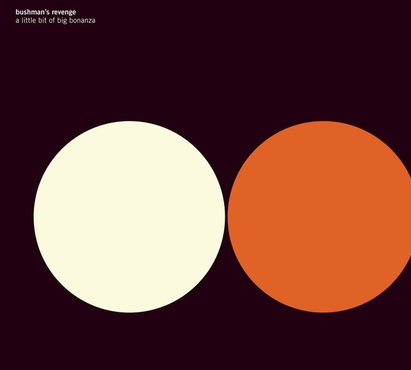
CRVI002996Kim Hiorthøy - Bushman's Revenge — A Little Bit Of Big Bonanza
2012
2012
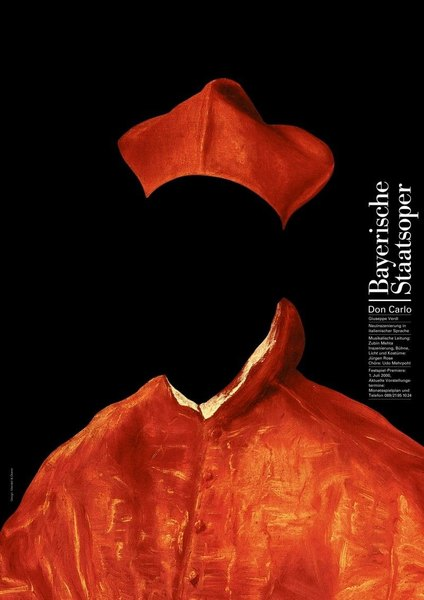
CRVI003130Pierre Mendell - Design Process Auto
Poster · 1986
Poster · 1986

CRVI000873John Provencher - [On, Clubhouse Paris]
On · Clubhouse Paris
On · Clubhouse Paris

CRVI001555Remedios Varo - Still Life Reviving (Naturaleza muerta resucitando)
1963
1963
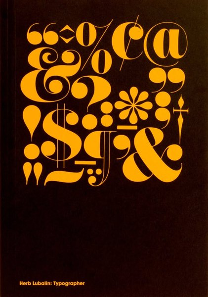
CRVI003155Herb Lubalin - Untitled

CRVI000126Shigeo Fukuda - The World of Shigeo Fukuda in U.S.A.
M.H. de Young Memorial Museum, San Francisco · Junior Art Center, Los Angeles · Santa Barbara Museum of Art · 1971
M.H. de Young Memorial Museum, San Francisco · Junior Art Center, Los Angeles · Santa Barbara Museum of Art · 1971

CRVI001162Kenny Dorham - Una Mas
Designed by Reid Miles, photograph by Francis Wolff · Blue Note BLP 4127 · 1963
Designed by Reid Miles, photograph by Francis Wolff · Blue Note BLP 4127 · 1963

CRVI000078Jega - Spectrum
Designer unknown · 1998
Designer unknown · 1998

CRVI001332Barney Bubbles - Vinyl
Designed by Barney Bubbles
Designed by Barney Bubbles

CRVI001515Ilya Chashnik - Vertical Axes in Movement

CRVI001936Chris Ofili - Within Reach
2003
2003

CRVI001370Frank Wess - Yo Ho! / Poor You, Little Me
Designer unrecorded · Prestige 7266 · 1963
Designer unrecorded · Prestige 7266 · 1963

CRVI001828Victor Vasarely - Geometric composition

CRVI001457Unknown - Portrait of a young man in a red robe

CRVI001218Mati Klarwein - Untitled
Painting · plate P18-vol2-88 on the artist's own site
Painting · plate P18-vol2-88 on the artist's own site

CRVI000633D.W. Pine, Edel Rodriguez - Total Meltdown
TIME, October 24 2016 · 2016
TIME, October 24 2016 · 2016

CRVI000874John Provencher - The Russian Bot Army That Conquered Online Poker
Bloomberg Businessweek, 20 September 2024 · 2024
Bloomberg Businessweek, 20 September 2024 · 2024

CRVI001097Kim Laughton - Untitled

CRVI000488Stella Ragas - The Takeover
New York, May 6-19, 2024 · 2024
New York, May 6-19, 2024 · 2024

CRVI001892Joseph Kosuth - Four Colors Four Words
1966
1966

CRVI001348Unknown - Jodorowsky's Dune — theatrical poster
Maker unidentified · 2013
Maker unidentified · 2013

CRVI001564Otto Dix - The Street of Brothels
1916
1916

CRVI001080Kim Laughton - Untitled

CRVI000120Tadanori Yokoo - Tadanori Yokoo — Stedelijk Museum Amsterdam
Exhibition poster, 22.2 t/m 14.4 1974 · 1974
Exhibition poster, 22.2 t/m 14.4 1974 · 1974

CRVI001066David Rudnick - Terrain (front)
Published by It's Nice That
Published by It's Nice That

CRVI001234Mati Klarwein - Virgin Mary
Painting · plate V20-Virgin-Mary on the artist's own site
Painting · plate V20-Virgin-Mary on the artist's own site

CRVI001572Georg Scholz - Industriebauern
1920
1920

CRVI001224Mati Klarwein - Untitled
Painting · plate P06B-vol2-51 on the artist's own site
Painting · plate P06B-vol2-51 on the artist's own site

CRVI002877Kim Hiorthøy - Elephant9 With Reine Fiske — Silver Mountain
2015
2015

CRVI000213Unknown - Stare
Reaction GIF · Walton Goggins as Rick Hatchett, The White Lotus · 72 frames, 3.6s loop · 2025
Reaction GIF · Walton Goggins as Rick Hatchett, The White Lotus · 72 frames, 3.6s loop · 2025

CRVI001173The Who - A Quick One
Designed by Alan Aldridge · Reaction 593 002 · 1966
Designed by Alan Aldridge · Reaction 593 002 · 1966

CRVI003055Sheila Hicks - untitled

CRVI000499Leo Jung - The Longest Walk to America
The California Sunday Magazine, April 2020 · 2020
The California Sunday Magazine, April 2020 · 2020

CRVI002110Christian Boltanski - Installation with hung clothing

CRVI001531Grant Wood - Arnold Comes of Age
1930
1930

CRVI000270Mop Mop - Isle Of Magic
Designer unknown · Agogo · 2013
Designer unknown · Agogo · 2013
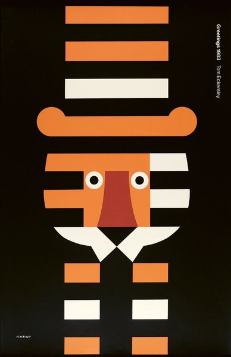
CRVI003136Tom Eckersley - Untitled

CRVI001023Gustave Courbet - L'Homme à la pipe (Self-Portrait, Man with Pipe)
Oil on canvas, 45.8 × 37.8 cm · Musée Fabre, Montpellier · c. 1849
Oil on canvas, 45.8 × 37.8 cm · Musée Fabre, Montpellier · c. 1849

CRVI001841Unknown - Concentric dotted composition

CRVI000031Telefon Tel Aviv - Map of What Is Effortless
Designed by Joshua Eustis, Charles Cooper · Hefty Records · 2004
Designed by Joshua Eustis, Charles Cooper · Hefty Records · 2004

CRVI002450Roberto Matta - Magenta and green burst

CRVI001397Giorgio de Chirico - The Enigma of a Day
Giorgio de Chirico · 1914 · 1914
Giorgio de Chirico · 1914 · 1914

CRVI001064Lezley Saar - Untitled painting
Shown in 'Lezley Saar: Salon des Refusés', California African American Museum, 2017–18
Shown in 'Lezley Saar: Salon des Refusés', California African American Museum, 2017–18

CRVI001394Giorgio de Chirico - The Seer
Giorgio de Chirico · 1914 · 1914
Giorgio de Chirico · 1914 · 1914

CRVI003465Albrecht Dürer - Untitled

CRVI001668María Blanchard - Still Life with a Box of Matches (Nature morte à la boîte d'allumettes)
1918
1918

CRVI001692Luigi Russolo - Souvenir d'une nuit (Memories of a Night)
1911
1911

CRVI001221Mati Klarwein - Untitled
Painting · plate P19-vol2-90 on the artist's own site
Painting · plate P19-vol2-90 on the artist's own site

CRVI001395Giorgio de Chirico - The Red Tower
Giorgio de Chirico · 1913 · 1913
Giorgio de Chirico · 1913 · 1913

CRVI000411EPMD - Strictly Business
Designer unknown · Fresh · 1988
Designer unknown · Fresh · 1988

CRVI000830Seymour Chwast - Liberty
Artis 89 · offset · 60 × 84 cm
Artis 89 · offset · 60 × 84 cm

CRVI001244Mati Klarwein - Grandfather
Painting · plate V27-Grandfather on the artist's own site
Painting · plate V27-Grandfather on the artist's own site

CRVI003405Unknown - Untitled

CRVI003166Alex Steinweiss - Untitled

CRVI001380Terry Pollard - Terry Pollard
Designed by Burt Goldblatt · Bethlehem 1015 · 1955
Designed by Burt Goldblatt · Bethlehem 1015 · 1955

CRVI001154John Coltrane - Coltrane
Designed by Esmond Edwards · Prestige PRLP 7105 · 1957
Designed by Esmond Edwards · Prestige PRLP 7105 · 1957

CRVI001119Art Blakey And The Jazz Messengers - Moanin'
Photograph by Buck Hoeffler · Blue Note BLP 4003 · 1959
Photograph by Buck Hoeffler · Blue Note BLP 4003 · 1959

CRVI002827Yusaku Kamekura - Graphis Annual 60/61
1960
1960

CRVI000310Doris Norton - Artificial Intelligence
Designer unknown · Globo · 1985
Designer unknown · Globo · 1985

CRVI001975Kehinde Wiley - Portrait of a standing man

CRVI000867Julian Stanczak - [Untitled]

CRVI001915James Turrell - Juke (Green)
1968
1968

CRVI000393Harold Melvin & The Blue Notes - Wake Up Everybody (feat. Teddy Pendergrass)
Designer unknown · International · 1975
Designer unknown · International · 1975

CRVI001479Vincent van Gogh - La Berceuse (Woman Rocking a Cradle; Augustine-Alix Pellicot Roulin, 1851–1930)
1889
1889

CRVI002107Martin Kippenberger - Buchholz & Schipper
1990
1990

CRVI001542Palmer Hayden - Sleeping figure with floating instruments

CRVI002018Zeng Fanzhi - Night landscape with the Statue of Liberty

CRVI002069Unknown - Gestural painting in blue and red

CRVI000748Olaf Stapledon - Sirius
Designed by David Pelham · Penguin Science Fiction · 1972
Designed by David Pelham · Penguin Science Fiction · 1972

CRVI001067David Rudnick - Terrain (back)
Published by It's Nice That
Published by It's Nice That

CRVI001325Unknown - Tron — light cycles, film still
Photographer unidentified · 1982
Photographer unidentified · 1982

CRVI001116Andrew Hill - Judgment!
Designed by Reid Miles, photograph by Francis Wolff · Blue Note BLP 4159 · 1964
Designed by Reid Miles, photograph by Francis Wolff · Blue Note BLP 4159 · 1964

CRVI000365Herbie Hancock - Future Shock
Designer unknown · Columbia · 1983
Designer unknown · Columbia · 1983

CRVI000781Robert Brownjohn, Ivan Chermayeff, Thomas Geismar - Artist’s Proof for the cover of Pepsi-Cola World, October 1958
Lithograph · 33 × 26.7 cm · 1958
Lithograph · 33 × 26.7 cm · 1958

CRVI001083Kim Laughton - Untitled

CRVI001326Unknown - Tron
Maker unidentified · 1982
Maker unidentified · 1982

CRVI000560Lisa Sheehan - Blood Sport
Mother Jones, November + December 2022 · 2022
Mother Jones, November + December 2022 · 2022

CRVI001094Kim Laughton - Untitled

CRVI001324Peter Lloyd - Tron — concept art, city grid
Illustration by Peter Lloyd · 1982
Illustration by Peter Lloyd · 1982

CRVI003403Unknown - Untitled

CRVI001688Luigi Russolo - Profumo
1910
1910

CRVI002127Bruce Nauman - My Name As Though It Were Written on the Surface of the Moon
1968
1968

CRVI001227Mati Klarwein - Untitled
Painting · plate P12-vol2-69 on the artist's own site
Painting · plate P12-vol2-69 on the artist's own site

CRVI001077Kim Laughton - Untitled
Published by Real Life
Published by Real Life

CRVI002083Unknown - Light installation with suspended lamps

CRVI003014Kim Hiorthøy - Krokofant — III
2017
2017

CRVI000881Unknown - Stylised face in profile with a hand and cross-bar
Trademark · owner not established · designer unknown
Trademark · owner not established · designer unknown

CRVI000910Shure Brothers, Inc. - S
Trademark · Piezoelectric Instruments to Measure and Analyze Vibrations · Chicago, Illinois · designer unknown · 1952
Trademark · Piezoelectric Instruments to Measure and Analyze Vibrations · Chicago, Illinois · designer unknown · 1952

CRVI000998Unknown - A head packed with gears, rollers and an eye
Trademark · owner not established · designer unknown
Trademark · owner not established · designer unknown

CRVI000967Societe Anonyme Eternit Emaille - An isometric stack of plates and blocks — the product list drawn as a solid
Trademark · Building Materials: Plates, Tiles, Blocks and Pipes of Enameled Asbestos Cement · Cappelle-au-Bois, Belgium · designer unknown · 1928
Trademark · Building Materials: Plates, Tiles, Blocks and Pipes of Enameled Asbestos Cement · Cappelle-au-Bois, Belgium · designer unknown · 1928

CRVI000887Colonial Sugars Company - S
Trademark · Sugar and Sugar Cane · Jersey City, New Jersey · designer unknown · 1953
Trademark · Sugar and Sugar Cane · Jersey City, New Jersey · designer unknown · 1953

CRVI000920Unknown - CAPTAIN KANGAROO
Trademark · owner not established · designer unknown
Trademark · owner not established · designer unknown

CRVI000963Staten Island Home Utilities, Inc. - GASOLINE
Trademark · Gasoline · Staten Island, New York · designer unknown · 1936
Trademark · Gasoline · Staten Island, New York · designer unknown · 1936

CRVI001012Unknown - A right angle of bars stepping into perspective
Trademark · owner not established · designer unknown
Trademark · owner not established · designer unknown

CRVI001007Unknown - BLACK JAZZ
Trademark · owner not established · designer unknown
Trademark · owner not established · designer unknown

CRVI000929Unknown - Two paired bars joined by a crossing stroke
Trademark · owner not established · designer unknown
Trademark · owner not established · designer unknown

CRVI001010BIT, Inc. - BIT
Trademark · Installation and Repair Services for Computers · Natick, Massachusetts · designer unknown · 1971
Trademark · Installation and Repair Services for Computers · Natick, Massachusetts · designer unknown · 1971

CRVI000996Unknown - HAIR
Trademark · owner not established · designer unknown
Trademark · owner not established · designer unknown
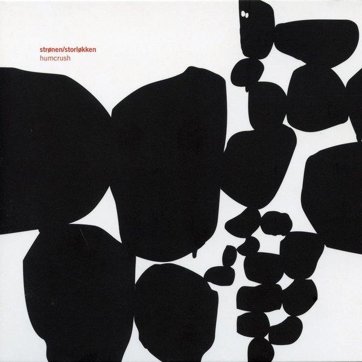
CRVI002977Kim Hiorthøy - Strønen* / Storløkken* — Humcrush
2004
2004

CRVI001000Mueller Welt, Inc. - MUELLER WELT
Trademark · Contact Lenses · Chicago, Illinois · designer unknown · 1952
Trademark · Contact Lenses · Chicago, Illinois · designer unknown · 1952

CRVI001305Horace Parlan - Us Three
Designed by Reid Miles, photograph by Francis Wolff · Blue Note 4037 · 1960
Designed by Reid Miles, photograph by Francis Wolff · Blue Note 4037 · 1960
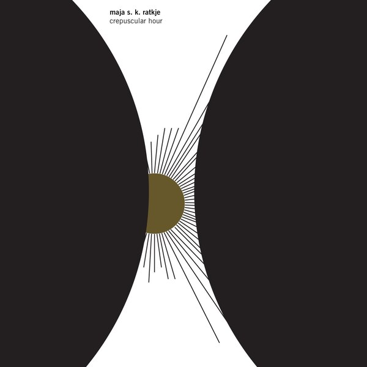
CRVI003013Kim Hiorthøy - Maja S. K. Ratkje — Crepuscular Hour
2016
2016

CRVI000932Unknown - A black square holding two discs and a rounded bar
Trademark · owner not established · designer unknown
Trademark · owner not established · designer unknown

CRVI000675Unknown - The Apology Machine
Bloomberg Businessweek, March 18, 2019 · 2019
Bloomberg Businessweek, March 18, 2019 · 2019

CRVI000349Bernie Worrell - All The Woo In The World
Designer unknown · Arista · 1978
Designer unknown · Arista · 1978

CRVI002439The Aetherius Appreciation Society Presents The Silent Group - Accelerated Evolution Music
2020
2020

CRVI002349René Magritte - The Lovers (Les Amants)
1928
1928

CRVI000334Chairmen of the Board - Give Me Just A Little More Time
Designer unknown · Invictus · 1970
Designer unknown · Invictus · 1970

CRVI001118Andrew Hill - Smoke Stack
Designed by Reid Miles · Blue Note BLP 4160 · 1966
Designed by Reid Miles · Blue Note BLP 4160 · 1966

CRVI002305Carrie Mae Weems - Untitled, from The Kitchen Table Series
1990
1990

CRVI000115Yusaku Kamekura - Tokyo 1964 — Starting Line
Official poster, Games of the XVIII Olympiad · photograph Osamu Hayasaki · 1964
Official poster, Games of the XVIII Olympiad · photograph Osamu Hayasaki · 1964

CRVI001588Richard Estes - Downtown Reflections
2001
2001

CRVI002020Zhang Xiaogang - Bloodline Series: Big Family No. 1

CRVI002474Johnny Pacheco - Spotlight on Pacheco, Vol. V
1963
1963

CRVI000092Juan Blanco - Musica Electroacustica
Designer unknown · Areito
Designer unknown · Areito

CRVI000165Bonzo Dog Band - The Doughnut in Granny's Greenhouse
Designed by Vivian Stanshall
Designed by Vivian Stanshall

CRVI000162Kazumasa Nagai - The World of Kazumasa Nagai - Ikeda Museum of the 20th Century Art
Designed by Kazumasa Nagai · 1980
Designed by Kazumasa Nagai · 1980

CRVI000551Thomas Alberty - The Pleasures of Outdoor Dining
New York, October 24- November 6, 2022 · 2022
New York, October 24- November 6, 2022 · 2022

CRVI000395Herbie Mann - Bird In A Silver Cage
Designer unknown · Atlantic · 1976
Designer unknown · Atlantic · 1976

CRVI000760Witold Dybowski - Powrót Jedi
Return of the Jedi · Polish release poster · 1984
Return of the Jedi · Polish release poster · 1984

CRVI001240Mati Klarwein - Daily Miracle
Painting · plate v30-Daily-Miracle on the artist's own site
Painting · plate v30-Daily-Miracle on the artist's own site

CRVI001703Mario Sironi - The Lamp
1919
1919

CRVI002475Johnny Pacheco - Pacheco, his Flute and Latin Jam

CRVI003364Ralph Gibson - Untitled

CRVI001528Jack Levine - The Feast of Pure Reason
1937
1937

CRVI001586Richard Estes - Bus with Reflection of the Flatiron Building
1967
1967

CRVI002303Carrie Mae Weems - Untitled (Woman standing alone)
1990
1990

CRVI001567Max Beckmann - Perseus's Last Duty
1949
1949

CRVI000048Oneohtrix Point Never - R Plus Seven
Designed by Robert Beatty · Warp Records · 2013
Designed by Robert Beatty · Warp Records · 2013

CRVI002372Jan Sawka - Crash
1977
1977

CRVI001973Carrie Mae Weems - Untitled (Woman and daughter with makeup)

CRVI000559Tanya Moskowitz - The Innovators Issue
WSJ. Magazine, November 2022 · 2022
WSJ. Magazine, November 2022 · 2022

CRVI001460William Morris - Violet and Columbine
Textile · 1883
Textile · 1883

CRVI000223The Five Corners Quintet - Hot Corner
Designer unknown · Ricky-Tick · 2008
Designer unknown · Ricky-Tick · 2008

CRVI000341Terry Callier - Occasional Rain
Designer unknown · Coder · 1972
Designer unknown · Coder · 1972

CRVI001695Ivo Pannaggi - Treno in corsa

CRVI000301Matt Baldwin - Night In The Triangle
Designer unknown · American Dust · 2011
Designer unknown · American Dust · 2011

CRVI002063El Greco - The Adoration of the Shepherds

CRVI001017Henri Fantin-Latour - Édouard Manet
Oil on canvas · Art Institute of Chicago · 1867
Oil on canvas · Art Institute of Chicago · 1867

CRVI002309Neo Rauch - Gewitterfront
2016
2016

CRVI002113Tadeusz Kantor - Still life

CRVI001514Ilya Chashnik - Suprematism
1923
1923

CRVI000029Squarepusher - Feed Me Weird Things
Designed by Johnny Clayton, Tom Jenkinson · Rephlex · 1996
Designed by Johnny Clayton, Tom Jenkinson · Rephlex · 1996

CRVI002160Robert Mapplethorpe - Self-portrait

CRVI002476Ismael Miranda - Abran Paso!
1971
1971

CRVI002235Oskar Schlemmer - Das Triadische Ballett — costume group
1926
1926

CRVI001337Hawkwind - X In Search Of Space
Maker unidentified · United Artists · 1971
Maker unidentified · United Artists · 1971

CRVI001183Unknown - Ravine of faces with a luminous figure
Painting
Painting

CRVI001268Ike Quebec - It Might As Well Be Spring
Designed by Reid Miles, photograph by Francis Wolff · Blue Note 4105 · 1962
Designed by Reid Miles, photograph by Francis Wolff · Blue Note 4105 · 1962

CRVI001136Grant Green - Visions
Designed by Beverly Parker, photograph by Norman Seeff · Blue Note BST-84373 · 1971
Designed by Beverly Parker, photograph by Norman Seeff · Blue Note BST-84373 · 1971

CRVI000441David Pelham - Tiger! Tiger!
Cover for Alfred Bester · Penguin Science Fiction
Cover for Alfred Bester · Penguin Science Fiction

CRVI001374Max Brüel Quartet - Cool Bruel
Designer unrecorded · EmArcy 36062 · 1956
Designer unrecorded · EmArcy 36062 · 1956

CRVI000018Philip Perkins - Drive Time
Designed by Guy Orcutt · Fun Music · 1985
Designed by Guy Orcutt · Fun Music · 1985

CRVI000233Portishead - Portishead
Designer unknown · Go! Beat · 1997
Designer unknown · Go! Beat · 1997

CRVI002161Robert Mapplethorpe - Orchid

CRVI001297Unique Jazz from the Westchester Workshop - Unique Jazz
Designer unrecorded · Unique LP-103 · 1957
Designer unrecorded · Unique LP-103 · 1957

CRVI002028Neo Rauch - Die Stickerin
2008
2008

CRVI001689Luigi Russolo - Synthèse plastique des mouvements d'une femme

CRVI000160Kazumasa Nagai - Kazumasa Nagai Exhibition - Design Gallery
Designed by Kazumasa Nagai · 1991
Designed by Kazumasa Nagai · 1991

CRVI001648Pablo Picasso - The Old Guitarist
late 1903–early 1904
late 1903–early 1904

CRVI001266The Horace Silver Quintet - Finger Poppin'
Designed by Reid Miles, photograph by Francis Wolff · Blue Note 4008 · 1959
Designed by Reid Miles, photograph by Francis Wolff · Blue Note 4008 · 1959

CRVI000584Irving Spellings - …one-third of a nation…
A Living Newspaper about housing · Adelphi Theatre, New York · between 1936 and 1939
A Living Newspaper about housing · Adelphi Theatre, New York · between 1936 and 1939

CRVI001254Unknown - Thelonious Monk at the piano
Photographer unidentified
Photographer unidentified

CRVI000167Albert Ayler - New Grass
Designer unknown · 1969
Designer unknown · 1969

CRVI000060Tito - Quetzalcóatl
Designed by Tito, Manuel Fornos · Discos Tiabi · 1977
Designed by Tito, Manuel Fornos · Discos Tiabi · 1977

CRVI001253Philippe Entremont, Leonard Bernstein, New York Philharmonic - Bernstein: The Age of Anxiety
Painting by Mati Klarwein · Columbia Masterworks MS 6885 · 1966
Painting by Mati Klarwein · Columbia Masterworks MS 6885 · 1966

CRVI002243Unknown - Johannes Itten in his Mazdaznan robe

CRVI001316Miles Davis - Miles Davis, Volume 2
Designed by John Hermansader · Blue Note 5022 · 1953
Designed by John Hermansader · Blue Note 5022 · 1953

CRVI001095Kim Laughton - Untitled

CRVI001481Henri Rousseau - Fight Between a Tiger and a Buffalo
1908
1908

CRVI001899On Kawara - July 4, 1967
Today series · 1967
Today series · 1967

CRVI000664Unknown - The New Yorker, April 9, 2007
The New Yorker, April 9, 2007 · 2007
The New Yorker, April 9, 2007 · 2007

CRVI002395Bruce Nauman - Self-Portrait as a Fountain
1966-67
1966-67

CRVI001025Gustave Courbet - La Voyante (La Somnambule)
Oil on canvas · Musée des Beaux-Arts et d'Archéologie, Besançon · c. 1865
Oil on canvas · Musée des Beaux-Arts et d'Archéologie, Besançon · c. 1865

CRVI001916James Turrell - Raethro II (Green)
1969
1969

CRVI000656Unknown - How Blackberry Became a Relic
Bloomberg Businessweek, December 9–1 Photographs from various museums and art libraries 2013 · 2013
Bloomberg Businessweek, December 9–1 Photographs from various museums and art libraries 2013 · 2013

CRVI001061Ingo Swann - Cosmic painting

CRVI000442David Pelham - The Demolished Man
Cover for Alfred Bester · Penguin Science Fiction
Cover for Alfred Bester · Penguin Science Fiction

CRVI001334Lynn Goldsmith - Gene Simmons
Photograph by Lynn Goldsmith
Photograph by Lynn Goldsmith

CRVI002677Unknown - 日仏現代ポスター交流展 (Japan–France Contemporary Poster Exchange)
1986
1986

CRVI001019Édouard Manet - The Spanish Singer
Oil on canvas, 147.3 × 114.3 cm · The Metropolitan Museum of Art, New York · 1860
Oil on canvas, 147.3 × 114.3 cm · The Metropolitan Museum of Art, New York · 1860

CRVI001169Oscar Peterson, Milt Jackson, Ray Brown, Louis Hayes - Reunion Blues
Designed by Wolfgang Baumann · MPS Records · 1971
Designed by Wolfgang Baumann · MPS Records · 1971

CRVI000407Various Artists - Live Convention "80"
Designer unknown · Disc-O-Wax · 1981
Designer unknown · Disc-O-Wax · 1981

CRVI000159Kazumasa Nagai - JIDA 30th Anniversary Program
Designed by Kazumasa Nagai · 1982
Designed by Kazumasa Nagai · 1982

CRVI000339Arif Mardin - Glass Onion
Designer unknown · Atlantic · 1969
Designer unknown · Atlantic · 1969

CRVI000360O.V. WRIGHT - Into Something (Can't Shake Loose)
Designer unknown · Hi · 1977
Designer unknown · Hi · 1977

CRVI002403Ray Barretto - Hard Hands
1968
1968

CRVI002197Pablo Picasso - Pierrot and Colombina
1900
1900
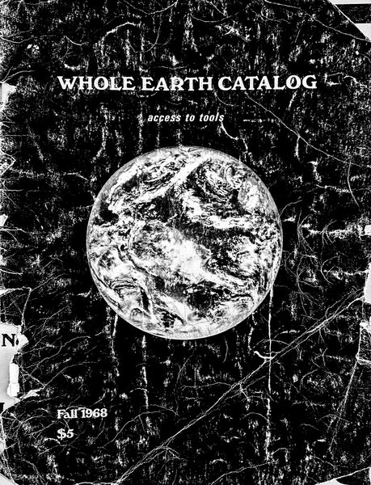
CRVI003522Stewart Brand - Whole Earth Catalog, Fall 1968
access to tools · 1968
access to tools · 1968

CRVI000535Chris Nosenzo - Lupin and the Art of the Steal
Bloomberg Businessweek, July 5, 2021 · 2021
Bloomberg Businessweek, July 5, 2021 · 2021

CRVI002180Yasumasa Morimura - Self-portrait after Velázquez

CRVI000475Justin Metz - The Atlantic, October 2024
The Atlantic October · 2024
The Atlantic October · 2024

CRVI000219Yayoi Kusama - Longing for Eternity
Photograph by Vincent Tullo · shown in 'Festival of Life', David Zwirner Gallery · 2017
Photograph by Vincent Tullo · shown in 'Festival of Life', David Zwirner Gallery · 2017

CRVI002775Étienne-Jules Marey - Chronophotograph of a running man

CRVI001989Lynette Yiadom-Boakye - The House Behind You
2011
2011

CRVI001876Frank Stella - Jill
1959
1959

CRVI003008Kim Hiorthøy - Krokofant — II
2015
2015

CRVI000263Roman Cieślewicz - Polish Fashion
Advertising Poster · 1972 · 1972
Advertising Poster · 1972 · 1972

CRVI000856The Face - Hideous Kinky
The Face, issue 26, Spring 2026 · pages 14–15 · 2026
The Face, issue 26, Spring 2026 · pages 14–15 · 2026

CRVI001687Luigi Russolo - Autoritratto con teschi
1908
1908

CRVI002623Willie Colón - The Hustler
1968
1968

CRVI000362Millie Jackson - Caught Up
Designer unknown · Spring · 1974
Designer unknown · Spring · 1974

CRVI001375Thelonious Monk - Thelonious Himself
Designed by Paul Bacon, photograph by Paul Weller · Riverside 12-235 · 1957
Designed by Paul Bacon, photograph by Paul Weller · Riverside 12-235 · 1957

CRVI000723Burning Star Core - Challenger
Front cover · designed by Robert Beatty
Front cover · designed by Robert Beatty

CRVI001213Mati Klarwein - Real Estate
Painting · plate real estate on the artist's own site
Painting · plate real estate on the artist's own site

CRVI001335Lynn Goldsmith - Tom Petty
Photograph by Lynn Goldsmith
Photograph by Lynn Goldsmith

CRVI001084Kim Laughton - Untitled

CRVI001472Gustave Courbet - Jo, La Belle Irlandaise
1866
1866

CRVI002448Roberto Matta - The Vertigo of Eros
1944
1944

CRVI000345Sly & The Family Stone - A Whole New Thing (Bonus Tracks Edition) [2007 Remaster]
Designer unknown · Epic · 1967
Designer unknown · Epic · 1967
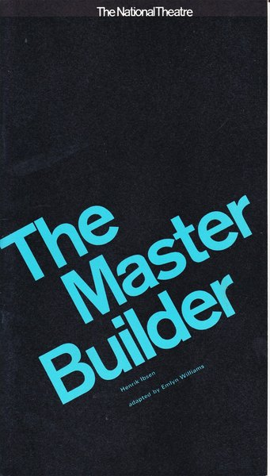
CRVI003306Ken Briggs - The Master Builder — The National Theatre (programme)
1964
1964

CRVI000526Cindy Wehling - Reemergence
High Country News, May 2023 · 2023
High Country News, May 2023 · 2023

CRVI003149György Kepes - Untitled
1938
1938

CRVI000311Carl Craig - More Songs About Food And Revolutionary Art
Designer unknown · Planet E · 1997
Designer unknown · Planet E · 1997

CRVI000776IBM - Eight-Striped Logos
IBM House Style · Graphic Design Guidelines, March 1991 · 1991
IBM House Style · Graphic Design Guidelines, March 1991 · 1991

CRVI000188E. McKnight Kauffer - Don Quixote
Dust jacket for Miguel de Cervantes' Don Quixote · The Modern Library, New York · 1940
Dust jacket for Miguel de Cervantes' Don Quixote · The Modern Library, New York · 1940

CRVI003406Unknown - Untitled

CRVI000290Portico Quartet - Portico Quartet
Designer unknown · Real World · 2012
Designer unknown · Real World · 2012

CRVI000186E. McKnight Kauffer - Ulysses
Dust jacket for James Joyce's Ulysses · Random House, New York · 1946
Dust jacket for James Joyce's Ulysses · Random House, New York · 1946

CRVI002511Josef Müller-Brockmann - der Film
1960
1960

CRVI002500Clark Terry - Color Changes
1961
1961

CRVI001273Thelonious Monk - Genius Of Modern Music, Volume 1
Designed by Paul Bacon, photograph by Francis Wolff · Blue Note 5002 · 1951
Designed by Paul Bacon, photograph by Francis Wolff · Blue Note 5002 · 1951

CRVI001453Michele De Lucchi - First
Chair · Memphis · 1983
Chair · Memphis · 1983

CRVI000333100 Proof (Aged In Soul) - 100 Proof Aged In Soul
Designer unknown · Hot Wax · 1972
Designer unknown · Hot Wax · 1972

CRVI001319Steve Reich - Drumming · Music For Mallet Instruments, Voices And Organ · Six Pianos
Photograph by Marcel Fugère · Deutsche Grammophon 2740 106 · 1974
Photograph by Marcel Fugère · Deutsche Grammophon 2740 106 · 1974

CRVI000100Sid Bass - From Another World
Designer unknown · Vik · 1956
Designer unknown · Vik · 1956

CRVI000510Albert Ayler - The Last Album
Designed by Woody Woodward Grafix · Impulse! · 1971
Designed by Woody Woodward Grafix · Impulse! · 1971

CRVI001068David Rudnick - Poster for Making Time — Bicep, Avalon, Emerson, Dave P, Z.O.A., S. Vena, Sorted
Poster · Philadelphia · 2018
Poster · Philadelphia · 2018

CRVI001194Mati Klarwein - Angel, New York
Painting · plate V09-Angel-New-York on the artist's own site
Painting · plate V09-Angel-New-York on the artist's own site

CRVI000653Cover by Michael Marcelle - The Wall Street Issue
Vice, December 2014 · 2014
Vice, December 2014 · 2014

CRVI000002Sote - Architectonic
Artwork by Arash Bolouri · Morphine Records · 2014
Artwork by Arash Bolouri · Morphine Records · 2014

CRVI000404Dave Whyte - Untitled
Animation posted without a title · 750px · 140 frames, 2.8s loop · 2020
Animation posted without a title · 750px · 140 frames, 2.8s loop · 2020

CRVI001021Gustave Courbet - L'Homme blessé (The Wounded Man)
Oil on canvas, 81.5 × 97.5 cm · Musée d'Orsay, Paris · 1844–1854
Oil on canvas, 81.5 × 97.5 cm · Musée d'Orsay, Paris · 1844–1854

CRVI003167Anton Corbijn - Miles Davis
1985-1989
1985-1989

CRVI000240Sunship - Sunship
Designer unknown · Filter · 1997
Designer unknown · Filter · 1997

CRVI002891Unknown - Julie London — Around Midnight
1960
1960

CRVI003468Lucas Cranach the Elder - Samson and Delilah
1528
1528

CRVI002518Josef Müller-Brockmann - Strawinsky / Fortner / Berg
1955
1955

CRVI002976Kim Hiorthøy - Nils Økland — Bris
2004
2004

CRVI002390Bruce Nauman - Double Poke in the Eye II
1985
1985

CRVI002392Bruce Nauman - Life Death/Knows Doesn't Know
1983
1983

CRVI000728Raglani - Husk
Back cover · designed by Robert Beatty
Back cover · designed by Robert Beatty

CRVI000125Yusaku Kamekura - Expo '70
Japan World Exposition, Osaka · 'Progress and Harmony for Mankind' · 1970
Japan World Exposition, Osaka · 'Progress and Harmony for Mankind' · 1970

CRVI000189Unknown - Nope
Reaction GIF cut from TMZ footage · Rihanna leaving a club · 49 frames, 3.9s loop · 2014
Reaction GIF cut from TMZ footage · Rihanna leaving a club · 49 frames, 3.9s loop · 2014

CRVI000206Unknown - Uhhh
Reaction GIF · 46 frames, 4.6s loop
Reaction GIF · 46 frames, 4.6s loop

CRVI002619Tito Rodríguez and His Orchestra - Tito, Tito, Tito
1965
1965

CRVI000267Unforscene - Fingers And Thumbs
Designer unknown · Tru Thoughts · 2008
Designer unknown · Tru Thoughts · 2008

CRVI000044John Bender - Pop Surgery
Designed by Patrick Spenlau · Record Sluts · 1983
Designed by Patrick Spenlau · Record Sluts · 1983

CRVI000046Demdike Stare - Voices Of Dust
Designed by Radu Prepeleac · 2010
Designed by Radu Prepeleac · 2010

CRVI000084Leyland Kirby - Eager To Tear Apart The Stars
Designer unknown · History Always Favours The Winners · 2011
Designer unknown · History Always Favours The Winners · 2011

CRVI002091Francis Bacon - Man in Blue VII
1954
1954

CRVI002792Armin Hofmann - Armin Hofmann: Posters, The Museum of Modern Art
1981
1981

CRVI001263Curtis Fuller - The Opener
Photograph by Francis Wolff · Blue Note 1567 · 1957
Photograph by Francis Wolff · Blue Note 1567 · 1957

CRVI002176Yasumasa Morimura - Self-portrait after Vermeer

CRVI002912Thi-Linh Le - Sonny Sharrock — Ask The Ages
1991
1991

CRVI001082Kim Laughton - Untitled

CRVI000401PAUL RANDOLPH - This Is What It Is
Designer unknown · Mahogani Music · 2004
Designer unknown · Mahogani Music · 2004

CRVI001262The Teddy Charles Tentet - The Teddy Charles Tentet
Designer unrecorded · Atlantic 1229 · 1956
Designer unrecorded · Atlantic 1229 · 1956

CRVI000350The Brides of Funkenstein - Funk Or Walk
Designer unknown · Warner · 1978
Designer unknown · Warner · 1978
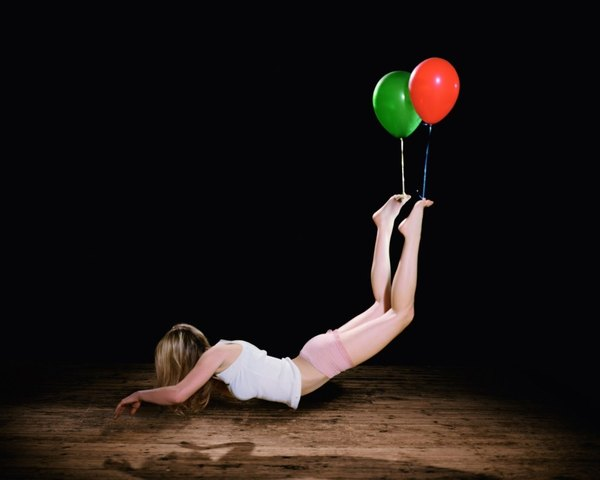
CRVI003238Sam Taylor-Johnson - Untitled
Limited edition print
Limited edition print

CRVI001153John Coltrane - Blue Train
Designed by Reid Miles, photograph by Francis Wolff · Blue Note BLP 1577 · 1958
Designed by Reid Miles, photograph by Francis Wolff · Blue Note BLP 1577 · 1958

CRVI001284The Phil Woods Quartet - Woodlore
Photograph by Bob Weinstock · Prestige 7018 · 1956
Photograph by Bob Weinstock · Prestige 7018 · 1956

CRVI000372Maze featuring Frankie Beverly - Can't Stop the Love (2004 Remaster)
Designer unknown · Capitol · 1985
Designer unknown · Capitol · 1985

CRVI001217Mati Klarwein - Untitled
Painting · plate P11-vol2-68 on the artist's own site
Painting · plate P11-vol2-68 on the artist's own site

CRVI001898On Kawara - Oct. 31, 1978
Today series · 1978
Today series · 1978
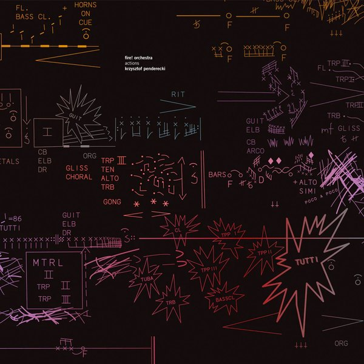
CRVI003020Kim Hiorthøy - Fire! Orchestra, Krzysztof Penderecki — Actions
2020
2020

CRVI001122Cannonball Adderley - Somethin' Else
Designed by Reid Miles, photograph by Francis Wolff · Blue Note BLP 1595 · 1958
Designed by Reid Miles, photograph by Francis Wolff · Blue Note BLP 1595 · 1958

CRVI001292Herbie Mann, Bobby Jaspar - Flute Flight
Designed by Marc Rice, photograph by Esmond Edwards · Prestige 7124 · 1957
Designed by Marc Rice, photograph by Esmond Edwards · Prestige 7124 · 1957

CRVI000820Seymour Chwast - DesignTalk Lectures
Mohawk · 61 × 89 cm · 1996
Mohawk · 61 × 89 cm · 1996

CRVI001140Horace Silver - In Pursuit Of The 27th Man
Photograph by Darnell Mitchell · Blue Note BN-LA054-F · 1973
Photograph by Darnell Mitchell · Blue Note BN-LA054-F · 1973

CRVI002497Delikio Parris - 我慢 (Gaman), from A Tribute to Koichi Sato

CRVI000076Herva - Kila
Designer unknown · 2015
Designer unknown · 2015

CRVI000001Paul Jebanasam - Rites
Designed by Alex Digard · 2013
Designed by Alex Digard · 2013
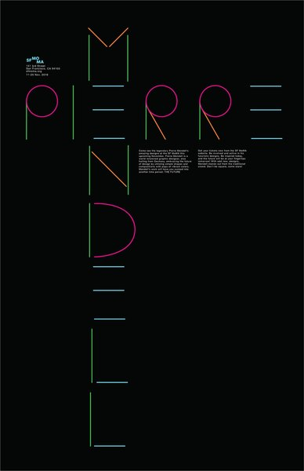
CRVI003131Pierre Mendell - Untitled

CRVI000274DRC Music - Kinshasa One Two
Designer unknown · Warp · 2011
Designer unknown · Warp · 2011